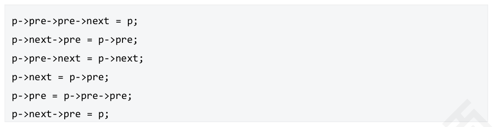

第 1 题
线性表是一个（ ）。
A． 有限序列，可以为空 B． 有限序列，不能为空 C． 无限序列，可以为空 D． 无限序列，不能为空 答案与解析 答案：A
由数据结构的有穷性可以知道，线性表必须是有限序列。若元素个数为0，表示线性表空。
教材第 7 页 第 2 题
（ ）是一个线性表
A． 由n 个实数组成的集合 B． 由100 个字符组成的序列 C． 由所有整数组成的序列 D． 邻接表 答案与解析 答案：B
A错误，集合不是线性表，而是另一种逻辑结构，线性表有前驱后继的数据关系。 C 错误，不满足有穷性，线性表必须是有限序列。 D 错误，邻接表是表示非线性关系的存储结构。注意：线性表各数据元素必须是同一类型。
教材第 7 页 第 3 题
关于线性表的顺序存储和链式存储，下列说法正确的是（ ）
A． 链式存储方式存储密度大于顺序存储方式 B． 都支持随机访问 C． 链式存储中，逻辑上相邻的元素在物理上不一定相邻 D． 在k 个位置进行插入，顺序存储比链式存储更方便 答案与解析 答案：C
A 错误，存储密度=有效存储空间/全部空间。链式存储中，需要引入指针来记录元素的前驱后继关系，所以存储密度更低。 B 错误，链式存储只支持顺序存取，顺序存储两种都支持。 C 正确，这是链式存储结构的特点。 D 错误，两者时间复杂度都是O(n)，顺序表的时间开销在移动，链表的时间开销在遍历。
教材第 7 页 第 4 题
使用一个顺序表（顺序存储结构）不能完整地表示（ ）
A． 有向图 B． 树 C． 二叉树 D． 栈 答案与解析 答案：B
A、C、D 都可以用顺序存储结构来存储。B 选择，因为树的孩子个数不确定，并不像二叉树那样，每个结点的两个孩子可以用顺序表的顺序编号来确定。
教材第 7 页 第 5 题
下列说法错误的是（ ） I．单链表是一种线性表，每个元素都有其前驱和后继II．单链表的存储密度比顺序表低III．需要经常修改线性表L 中的结点值，用链表比较方便IV．静态链表删除或插入不需要移动元素
A． III、IV B． I、II、III C． I、III D． I、II、III、IV 答案与解析 答案：C
I 错误，头尾分别没有前驱和后继；II 正确，单链表的存储密度比顺序表低，存储密度是指一个节点数据本身所占的存储空间和整个结点所占的存储空间之，单链表存储密度小于1；III错误，经常添加或者删除用链表比较方便，修改结点值链表复杂度为O（n）。IV 正确，只需要修改静态链表中的指针即可。
教材第 7 页 第 6 题
下述说法不正确的是（ ）
A． 数组可看成线性结构的一种推广，因此与线性表一样，可以对它进行插入、删除等操作 B． 稀疏矩阵以三元组表压缩存储后，必会失去随机存取功能 C． 从逻辑结构上看，n 维数组的每个元素均属于n 个向量 D． 数组也能采用链式存储结构 答案与解析 答案：A
A 错误，数组一旦确定，数据元素的容量和位置关系就是固定的，因此不能进行插人和删除等操作；注意和顺序表进行区分，顺序表是线性表的顺序存储，是物理结构，是可以增删改查的。 B 正确，稀疏矩阵压缩存储后，不能直接根据元素所在数组中的位置在内存中定址，也就意味着失去了随机存取功能； C 正确，n 维数组的任一个元素在每一维上都有确定的位置，该维上的所有元素构成一个向量； D 正确，数组虽然适合采用顺序存储，但在一些特殊场合，如稀疏矩阵为了节约空间，用链式存储 （十字链表法）也是一种必要的选择。
教材第 7 页 第 7 题
下列关于顺序表的叙述中，正确的是（ ）。
A． 顺序表可以利用一维数组表示，因此顺序表与一维数组在逻辑结构上是相同的 B． 在顺序表中，逻辑上相邻的元素物理位置上不一定相邻 C． 顺序表可以进行随机存取 D． 在顺序表中，每个元素的类型不必相同 答案与解析 答案：C
A 错误，顺序表是顺序存储的线性表，表中所有元素的类型必须相同，且必须连续存放。一维数组中的元素可以不连续存放，数组是一种扩展的逻辑结构；此外，栈、队列和树等逻辑结构也可利用一维数组表示，但它与顺序表不属于相同的逻辑结构。 B 错误，在顺序表中，逻辑上相邻的元表物理位置上也相邻。 C 正确，顺序表可以进行按下标存取，即支持随机存取。 D 错误，每个元素的类型必须相同，这是数据结构的性质。
教材第 8 页 第 8 题
在双链表的两个结点之间插入一个新结点，需要修改（ ）个指针域
A． 1 B． 3 C． 4 D． 2 答案与解析 答案：C
当在双链表的两个结点(分别用第一个、第二个结点表示)之间插入一个新结点时，需要修改四个指针域，分别是：新结点的前驱指针域，指向第一个结点；新结点的后继指针域，指向第二个结点；第一个结点的后继指针域，指向新结点；第二个结点的前驱指针域，指向新结点。（删除修改2 个即可）
教材第 8 页 第 9 题
与单链表相比，双链表的优点之一是（ ）
A． 插入、删除操作更方便 B． 可以进行随机访问 C． 可以省略表头指针或表尾指针 D． 访问前后相邻结点更灵活 答案与解析 答案：D
在插入和删除操作上，单链表和双链表都不用移动元素，都很方便，但双链表修改指针的操作更为复杂，A 错误。双链表中可以快速访问任何一个结点的前驱和后继结点，D 正确。
教材第 8 页 第 10 题
一个链表最常用的操作是在末尾插入结点和删除结点，则选用（ ）最节省时间。
A． 带头结点的双循环链表 B． 单循环链表 C． 带尾指针的单循环链表 D． 单链表 答案与解析 答案：A
在链表的末尾插入和删除一个结点时，需要修改其相邻结点的指针域。而寻找尾结点及尾结点的前驱结点时，只有带头结点的双循环链表所需要的时间最少。
教材第 8 页 第 11 题
设一个链表最常用的操作是在链尾之后插入新结点和删除链表的尾结点，则选（ ）效率最高。
A． 单链表 B． 循环单链表 C． 带链尾指针的循环单链表 D． 带头结点的循环双链表 答案与解析 答案：D
在链表中链尾插入新节点需要找到链尾指针，所以提供尾指针最合适，而删除尾结点通常需要找到尾结点的前驱结点，只有D 选项可以在O（1）时间复杂度完成两种操作。
教材第 8 页 第 12 题
对于没有尾指针的单链表，将n 个元素采用头插法建立单链表的时间复杂度为（ ），采用尾插法建立单链表的时间复杂度为（）。
A． 𝑂1 B． O(𝑛𝑙𝑜𝑔2𝑛) C． O(𝑛) D． O(𝑛2 ) 答案与解析 答案：C
、D。【解析】因为每次插入都要遍历找到尾结点，没有尾指针的单链表头插法建立的复杂度为n×O(1)=O(n)，尾插法建立的复杂度为。
教材第 8 页 第 13 题
有一个单向链表，头指针和尾指针分别为p, q，以下（ ）操作的复杂度会受链表长度的影响
A． 删除头部元素 B． 删除尾部元素 C． 头部元素之前插入一个元素 D． 尾部元素之后插入一个元素 答案与解析 答案：B
B 删除尾部元素，需要找到尾部元素的前一个元素，与链表长度有关。
教材第 8 页 第 14 题
设指针变量p 指向单链表中结点A，若删除单链表中结点A，则需要修改指针的操作序列为 （）
A． q=p->next; p->data=q->data; p>next=q->next; free(q); B． q=p->next; q->data=p->data; p>next=q->next; free(q); C． q=p->next; p->next=q->next; free(q)； D． q=p->next; p->data=q->data; free(q); 答案与解析 答案：A
首先用指针变量q 指向结点A 的后继结点B，然后将结点B 的值复制到结点A中，最后删除结点B。
教材第 8 页 第 15 题
不带头结点的单链表，设头指针为h，指针s 指向插入结点，那么头插的操作应该是（ ）
A． h->next = s->next; B． s->next = h->next; h->next = s; C． s->next = h; h = s; D． h->next = s;h = s; 答案与解析 答案：C
B 选项是带头结点的单链表头插相关操作； C 选项是头插的操作。
教材第 8 页 第 16 题
设有线性表A=𝑎1 𝑎2 … 𝑎𝑚,B=𝑏1 𝑏2 … 𝑏𝑛。将线性表A 、B交叉合并为线性表C=𝑎1 𝑏1 𝑎2 𝑏2 …，线性表A、B 和C 均以单链表结构存储，A、B 中长度更大的，后续多出的元素全部放在C 的最后，那么时间复杂度为（ ）
A． 𝑂𝑚 B． 𝑂𝑛 C． 𝑂𝑚+ 𝑛 D． 以上都错误 答案与解析 答案：D
其本质是依次遍历A、B，每次各取一个元素间隔插入C。所以间隔插入的时间 ，多余的只需要一次指针的修改，链接在C后面即可，所以时间复杂度为复杂度是𝑂𝑚𝑖𝑛𝑚𝑛 ，答案选D。 𝑂𝑚𝑖𝑛𝑚𝑛注意：𝑂𝑚𝑎𝑥𝑚𝑛= 𝑂𝑚+ 𝑛，但是𝑂𝑚𝑖𝑛𝑚𝑛并不等价
教材第 8 页 第 17 题
设有一个长度为n 的循环单链表，若从表中删除首元结点的时间复杂度达到0(n)，则此时采用的循环单链表的结构可能是（）。
A． 只有表头指针，没有头结点 B． 只有表尾指针，没有头结点 C． 只有表尾指针，带头结点 D． 只有表头指针，带头结点 答案与解析 答案：A
在循环单链表中，删除首元结点后，要保持链表的循环性，因此需要找到首元结点的前驱。当链表带头结点时，其前驱就是头结点，因此不论是表头指针还是表尾指针，删除首元结点的时间都为O(1)。当链表不带头结点时，其前驱是尾结点，因此，若有表尾指针，就可在0(1)的时间找到尾结点；若只有表头指针，则需要遍历整个链表找到尾结点，时间为0(n)。
教材第 9 页 第 18 题
长度为n 的单链表链接在长度为m 的单链表（都为不带头结点只有头指针的单链表）后面的时间复杂度为（）
A． O(1) B． O(n) C． O(m) D． O(m+n) 答案与解析 答案：C
要把长度为n 的单链表链接在长度为m 的单链表后面，那么首先需要找到长度为m 的单链表尾结点，时间开销为O(n)。再进行O(1)的链接操作。所以本题选C。
教材第 9 页 第 19 题
一个带头结点的非空单链表，结点结构为：{data | next}，其中next 是指向后继结点的指针，p指针指向该单链表中的一个结点，在p 指向的结点后插入一个由s 指针指向的新结点，正确操作是（ ）
A． s->next = p;p->next = s; B． p->next = s;s->next = p->next; C． s->next = s;p->next = s; D． s->next = p->next;p->next = s; 答案与解析 答案：D
为了使p 的后继不丢失，我们要先处理s->next=p->next。再用p->next=s；注意：指针是一种变量类型，这个类型的存储的内容是它指向数据的地址，结构体中，要用“->”表示他指向结点的内部数据项。如果是结构体本身，那么用node.next 的“.”来表示内部的数据项。
教材第 9 页 第 20 题
对带头结点的循环单链表，删除首元结点（非最后一个结点），需要修改（ ）个指针
A． 0 B． 1 C． 2 D． 3 答案与解析 答案：B
删除首元结点，只需执行如下操作：p=head->next; head->next=head->next->next; free(p)；所以只需要修改一个指针：head 的next 指针。注意：带头结点的循环链表尾结点的next 指针是指向头结点，而非首元结点，要注意这个细节。
教材第 9 页 第 21 题
设线性表中有2n 个元素，算法（ ）在单链表上实现要比在顺序表上实现效率更高。
A． 删除所有值为x 的元素 B． 在最后一个元素的后面插入一个新元素 C． 顺序输出前K 个元素 D． 交换第i 个元素和第2n-i-1 个元素的值(i=0，1，…，n-1) 答案与解析 答案：A
对于A，在单链表和顺序表上实现的时间复杂度都为O(n)，但后者要移动很多元素，所以在单链表上实现效率更高些。
教材第 9 页 第 22 题
下列说法正确的是（ ）
A． 分配给单链表的内存单元地址必须是连续的 B． 与顺序表相比，在链表中顺序访问所有节点，其算法的效率比较低 C． 从长度为n 的顺序表中删除任何一个元素，时间复杂度都是O(1) D． 向顺序表中插人一个元素，平均要移动大约一半的元素 答案与解析 答案：D
A 错误。分配给单链表的内存单元地址可以是不连续的。B 错误。在顺序表和链表上顺序访问所有节点，时间复杂度均为O(n)。C 错误。删除最后一个元素所需时间是O(1)。但从长度为n 的顺序表中删除任一个元素，平均时间复杂度是O(n)。
教材第 9 页 第 23 题
下列说法正确的是（ ） I．不带头结点单链表中，无论是插入还是删除元素，都需要找到其前驱II．删除带头结点的循环双链表中某结点时，只需要修改两个指针域III．带尾指针的单向循环链表中，删除尾结点的时间复杂度是O（1） IV．带头结点不带尾指针的单向循环链表，在链头插入一个元素的时间复杂度是O（1） V．链式存储结构都是动态申请空间，各元素逻辑上相邻，物理上不一定相邻
A． I、IV、V B． II、IV C． III、IV、V D． I、II、V 答案与解析 答案：B
I 错误，首元结点（链表中第一个存储有效数据的结点）没有前驱，其删除不需要找到前驱。 II 正确，删除修改2 个指针，在p、q 两非空结点后插入s 要修改4 个指针。 III 错误，删除尾结点需要找到尾结点的前驱，因此要O（n）时间遍历到其前驱结点。 IV 正确，要注意的细节是带头结点的循环单链表中，尾结点的next 始终指向头结点，无需修改尾结点的指针V 错误，静态链表是用数组表示各结点的前后关系，非动态申请空间。
教材第 9 页 第 24 题
在双链表中p 所指的结点之前插入一个结点q 的操作为（ ）
A． p->prior=q; q->next=p; p->prior->next=q; q->prior=p->prior; B． q->prior=p->prior; p->prior->next=q; q->next=p; p->prior=q->next; C． q->next=p; p->next=q; q->prior->next=q; q->next=p; D． p->prior->next=q; q->next=p; q->prior=p->prior; p->prior=q; 答案与解析 答案：D
具体过程如下图所示：
教材第 9 页 第 25 题
已知带头结点的非空循环双链表，指针p 指向链表中非首且非尾的任意一个结点，则执行下列语句序列实现的功能是（）

A． 删除p 指向的结点 B． 将p 指向的结点之前的结点插入p 结点之后 C． 将p 指向的结点与其后继结点互换 D． 将p 指向的结点的后继与p 指向的结点的前驱互换 答案与解析 答案：B
假设初始状态如下所示，p指向的结点为p结点（p指针忽略），p的前驱为pre1，p 的前驱的前驱为pre2，p 的后继节点为next。至此六条指令执行完，可知完成的操作是p 和和其前驱进行调换。答案选B。
教材第 10 页 第 26 题
下列操作可以在O（1）的时间复杂度内完成的是（ ）。
A． 删除单链表的第n 个元素 B． 在单链表的末尾添加一个元素 C． 删除单向循环链表的头结点 D． 删除双向循环链表的头结点 答案与解析 答案：D
选项A、B、C的时间复杂度均为是O(n)。选项C中，需要通过遍历链表才可以找到末尾元素，然后才能正确地设置末尾元素的next 结点。D的时间复杂度是O（1），可以通过首元素的prev 指针找到链表的末尾元素，然后设置相应的指针指向。
教材第 10 页 第 27 题
设对n(n>1)个元素的线性表的运算只有4 种：①删除第一个元素；②删除最后一个元素；③在第一个元素之前插入新元素；④在最后一个元素之后插入新元素，则最好使用（）。
A． 只有尾结点指针没有头结点指针的循环单链表 B． 只有尾结点指针没有头结点指针的非循环双链表 C． 只有头结点指针没有尾结点指针的循环双链表 D． 既有头结点指针又有尾结点指针的循环单链表 答案与解析 答案：C
删除最后一个元素，要找到最后一个元素的前驱结点，所以单链表时无法实现O(1)的时间复杂度，排除A、D。非循环双链表，无法通过尾结点找到头结点或者首元结点（第一个携带有效信息的结点），所以B 不能O(1)实现插入和删除第一个元素，排除。因此正确答案是C。
教材第 10 页 第 28 题
带头结点的双向循环链表L 为空表的条件是（ ）
A． L->next = L; B． L = NULL; C． L->next->prior = NULL; D． L->prior = NULL; 答案与解析 答案：A
双向循环链表L 为空表时的结构如下图所示，L 的next 和prior 都指向本身，只有A 选项满足条件。
教材第 10 页 第 29 题
现有一块连续空间能用来保存数据，且常需要插入、删除数据，那么最适合使用（ ）
A． 单链表 B． 静态链表 C． 双链表 D． 顺序表 答案与解析 答案：B
静态链表用数组来表示线性表的链式存储结构，需要事先申请一片较大的连续的空间。且插入和删除只需要改编表项的指针编号，无需移动元素，方便插入和删除。
教材第 10 页 第 30 题
下列关于静态链表的说法中，正确的是（ ）。 I．静态链表兼具顺序表和单链表的优点，因此存取表中第i 个元素的时间与i 无关II．静态链表能容纳的最大元素个数在表定义时就确定了，以后不能增加III．静态链表与动态链表在元素的插入、删除上类似，不需要移动元素IV．相比动态链表，静态链表可能浪费较多的存储空间
A． I、II、III B． II、III、IV C． I、III、IV D． I、II、IV 答案与解析 答案：B
静态链表的存储空间虽然是顺序分配的，但元素的存储不是顺序的，查找时仍然需要按链依次进行，而插入、删除都不需要移动元素。静态链表的存储空间是一次性申请的，能容纳的最大元素个数在定义时就已确定。由于并非每个空间都存储了元素，因此会造成存储空间的浪费。
教材第 10 页